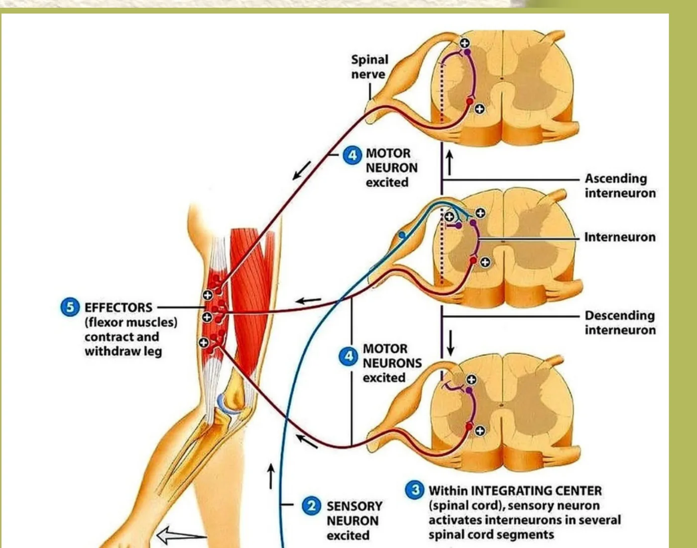

MEDULA SPINALIS
Refleks Saraf Spinal
Diproses langsung di sumsum tulang belakang (Medula Spinalis) dan mengontrol 31 pasang saraf spinal (Servikalis, Brakialis, Lumbalis, Sakralis).
01Reseptor
→
02Neuron Sensorik
→
03Sumsum Tulang Belakang
→
04Neuron Motorik
→
05Efektor
